컴퓨터활용능력-1급 (2013-10-19 기출문제)
1과목: 컴퓨터 일반
1. 다음 중 한글 Window XP에서 [휴지통]에 대한 설명으로 옳지 않은 것은?
- 삭제된 파일이나 폴더가 임시 보관되는 장소로 [휴지통]에 들어있는 파일은 필요할 때 복원할 수 있다.
- [휴지통]의 크기는 기본적으로 각 드라이브 용량의 10%로 설정되며 변경할 수 있다.
- [휴지통]의 용량을 초과하여 사용하면 [휴지통]의 모든 내용은 삭제된다.
- [휴지통]에서 문서 파일을 복원하기 전 까지는 파일을 편집할 수 없다.
(정답률: 87%)

2. 다음 중 컴퓨터 소프트웨어 개발 과정에서 제작되는 알파(Alpha) 버전에 관한 설명으로 옳은 것은?
- 정식 프로그램의 기능을 홍보하기 위해 기능 및 기간을 제한하여 배포하는 프로그램이다.
- 베타 테스트를 하기 전에 제작 회사내에서 테스트 할 목적으로 제작된 프로그램이다.
- 정식 버전을 출시하기 전에 테스트 목적으로 일반인에게 공개하는 프로그램이다.
- 오류 수정이나 성능향상을 위해 이미 배포된 프로그램의 일부를 변경해 주는 프로그램이다.
(정답률: 85%)
3. 다음 중 Windows XP의 [시작] 메뉴에 대한 설명으로 옳은 것은?
- [내 컴퓨터]에서는 컴퓨터에 설치된 구성 요소를 확인하고 관리할 수 있다.
- [내 최근 문서]에는 최근에 열어 본 파일들이 최대 5개까지 표시된다.
- [모든 프로그램]에는 최근에 실행한 프로그램 목록과 자주 사용하지 않는 프로그램 목록이 순서대로 표시 된다.
- [검색]은 웹 브라우저나 전자 메일 등과 같은 작업에 사용할 기본 프로그램을 검색하여 선택하도록 한다.
(정답률: 43%)
4. 다음 중 멀티미디어에 관련된 설명으로 옳지 않은 것은?
- 웹에서 멀티미디어 데이터를 다운로드하면서 동시에 재생해 주는 기술을 스트리밍 기술이라고 한다.
- 멀티미디어 데이터의 전송 및 보관을 위해 대용량의 동영상 및 사운드 파일을 압축하거나 압축을 푸는데 사용되는 모든 기술, 도구 등을 통칭하여 코덱(CODEC)이라 한다.
- 텍스트, 그래픽, 사운드, 동영상, 애니메이션 등의 여러 미디어를 통하여 처리하는 멀티미디어의 특징을 비선형성(Non-Linear)이라 한다.
- 정보 제공자와 사용자 간의 상호 작용에 의해 데이터가 전달되는 쌍방향성의 특징이 있다.
(정답률: 51%)
5. 다음 중 한글 Windows XP에서 프린터를 이용한 인쇄 기능의 설명으로 옳지 않은 것은?
- 문서가 인쇄되는 동안 프린터 아이콘이 알림 영역에 표시되며, 인쇄가 완료되면 아이콘이 사라진다.
- 인쇄 대기열에는 인쇄 대기 중인 문서가 표시되며, 목록의 각 항목에는 인쇄 상태 및 페이지 수와 같은 정보가 제공된다.
- 인쇄 대기열에서 프린터의 작동을 일시 중지하거나 계속할 수 있으며, 인쇄 대기 중인 모든 문서의 인쇄를 취소할 수 있다.
- 인쇄 대기 중인 문서에 대해서 용지 방향, 용지 공급 및 인쇄 매수 등을 인쇄창에서 변경할 수 있다.
(정답률: 73%)
6. 다음 중 동영상 압축 표준에 대한 설명으로 옳지 않은 것은?
- DivX : MPEG-4와 MP3를 재조합한 것으로 비표준 동영상 파일 형식이다.
- AVI : MS사가 개발한 Windows의 표준 동영상 파일 형식이다.
- ASF : Apple사가 개발한 동영상 압축 기술로 JPEG 방식을 사용한다.
- MPEG : 동영상 뿐만 아니라 오디오도 압축할 수 있으며 프레임간 연관성을 고려하여 중복 데이터를 제거하는 손실 압축 기법을 사용한다.
(정답률: 61%)
7. 다음 중 아래에서 설명하는 저작권법에 기초한 저작자의 재산권이 제한되는 범위가 아닌 것은?
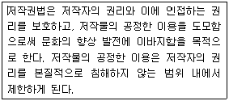
- 공적 이용을 위하여 공공기관 등에서 복제하는 경우
- 보도, 비평, 교육, 연구 등을 위하여 정당한 범위 안에서 인용하는 경우
- 고등학교 이하의 학교교육 목적상 필요한 교과용 도서에 게재하는 경우
- 방송사업자가 자체 방송을 위하여 일시적으로 녹음, 녹화하는 경우
(정답률: 54%)
8. 다음 중 IPv6 주소 체계에 대한 설명으로 옳지 않은 것은?
- IPv4의 업그레이드 버전으로 주소 구조가 64비트로 확장되었다.
- 주소의 각 부분은 콜론(:)으로 구분하여 16진수로 표현한다.
- IPv4에 비해 주소의 확장성, 융통성, 연동성이 뛰어나다.
- 실시간 흐름 제어로 향상된 멀티미디어 기능을 지원한다.
(정답률: 75%)
9. 다음 중 운영체제의 구성에서 제어 프로그램에 속하지 않는 것은?
- 다중 프로그램(Multi program)
- 감시 프로그램(Supervisor program)
- 작업 관리 프로그램(Job management program)
- 데이터 관리 프로그램(Data management program)
(정답률: 65%)
10. 다음 중 네트워크 장비인 리피터(Repeater)에 대한 설명으로 옳은 것은?
- 프로토콜 변환기능을 내포하여 다른 프로토콜에 의해 운영되는 두 개의 네트워크를 연결하는 장치이다.
- 네트워크 계층의 연동장치로 최적 경로 설정에 이용 되는 장치이다.
- 장거리 전송을 위하여 전송 신호를 재생시키거나 출력 전압을 높여주는 방법 등을 통해 주어진 신호를 증폭시켜 전달해 주는 중계 장치이다.
- 주로 LAN에서 다른 네트워크에 데이터를 보내거나 다른 네트워크로부터 데이터를 받아들이는데 사용 되는 장치이다.
(정답률: 69%)
11. 다음 중 네트워크 통신망의 구성 형태에 관한 설명으로 옳은 것은?
- 계층(Tree)형 : 한 개의 통신 회선에 여러 대의 단말 장치가 연결되어 있는 형태로 설치가 용이하고 통신망의 가용성이 높다.
- 버스(Bus)형 : 인접한 컴퓨터와 단말기를 서로 연결하여 양방향으로 데이터 전송이 가능한 형태로 단말기의 추가․제거 및 기밀 보호가 어렵다.
- 성(Star)형 : 모든 단말기가 중앙 컴퓨터에 연결 되어 있는 형태로 고장 발견이 쉽고 유지 보수가 용이하다.
- 링(Ring)형 : 모든 지점의 컴퓨터와 단말 장치를 서로 연결한 상태로 응답 시간이 빠르고 노드의 연결성이 높다.
(정답률: 57%)
12. 다음 중 인트라넷(Intranet)에 대한 설명으로 옳은 것은?
- 여러 대의 컴퓨터를 연결하여 하나의 서버로 사용하는 기술이다.
- 인터넷 기술을 이용하여 조직 내의 각종 업무를 수행할 수 있도록 만든 네트워크 환경이다.
- 사용자가 원할 경우 기록을 만들어 컴퓨터에 대해 성공한 연결 시도와 실패한 연결 시도를 기록한다.
- 기업체가 협력업체와 고객 간의 정보 공유를 목적으로 구성한 네트워크이다.
(정답률: 84%)
13. 다음 중 한글 Windows XP에서 [Windows 방화벽]이 수행하는 작업에 관한 설명으로 옳지 않은 것은?
- 권한이 없는 사용자가 네트워크를 통해 컴퓨터에 액세스하는 것을 방지한다.
- 특정 연결 요청을 차단하거나 차단 해제하기 위해 사용자의 허가를 요청한다.
- 네트워크 위치는 홈 또는 회사 네트워크, 공용 네트워크로 나누어진다.
- 위험한 첨부 파일이 있는 전자 메일을 사용자가 열지 못하게 한다.
(정답률: 79%)
14. 다음 중 TV, 냉장고, 이동전화 등과 같이 해당 제품의 특정 기능에 맞게 특화되어 제품 자체에 포함된 운영체제는?
- 임베디드 운영체제
- 유닉스 운영체제
- 리눅스 운영체제
- 윈도우 운영체제
(정답률: 77%)
15. 다음 중 문자 데이터를 표현하는 코드 체계에 해당되지 않는 것은?
- ASCII 코드
- EBCDIC 코드
- Unicode
- GRAY 코드
(정답률: 82%)
16. 다음 중 시스템 복구를 해야 하는 시기로 가장 적절하지 않은 것은?
- 새 장치를 설치한 후 시스템이 불안정 할 때
- 로그온 화면이 나타나지 않으며, 운영체제를 시작 할 수 없을 때
- 누락되거나 손상된 데이터 파일을 이전 버전으로 되돌리고자 할 때
- 파일의 단편화를 개선하여 디스크의 접근 속도를 향상시키고자 할 때
(정답률: 79%)
17. Windows XP의 제어판에서 [보안 센터]를 선택하면 세 가지 보안 설정을 통해 컴퓨터 상태를 확인할 수 있다. 다음 중 Windows 보안 센터의 세 가지 보안 설정에 해당하지 않는 것은?
- 자동 업데이트
- 방화벽
- 인증서
- 바이러스 백신
(정답률: 41%)
18. 다음 내용 중 옳은 것만 고른 것은?(오류 신고가 접수된 문제입니다. 반드시 정답과 해설을 확인하시기 바랍니다.)
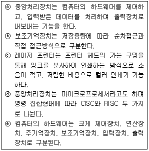
- ⓑ,ⓒ,ⓓ
- ⓐ,ⓓ,ⓔ
- ⓐ,ⓑ,ⓓ
- ⓐ,ⓑ,ⓒ
(정답률: 57%)
19. 다음 그림은 일반적인 웹 서버 프로그램의 동작 과정이다. 다음 중 서버 쪽 ( ) 안의 웹 프로그램으로 옳지 않은 것은?
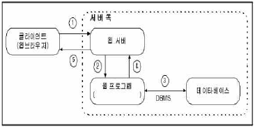
- ASP
- JSP
- XML
- PHP
(정답률: 66%)
20. 다음 중 프로그램 수행에 있어서 다음 순서에 실행할 명령어의 주소를 저장하는 레지스터는?
- 주소 레지스터(MAR)
- 프로그램 카운터(PC)
- 명령어 레지스터(IR)
- 버퍼 레지스터(MBR)
(정답률: 64%)
2과목: 스프레드시트 일반
21. 다음 중 아래 프로시저를 실행한 결과에 대한 설명으로 옳은 것은?
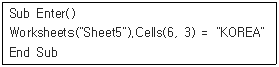
- Sheet5 시트의 [C3:C6] 영역에 “KOREA”를 입력한다.
- Sheet5 시트의 [A6:C6] 영역에 “KOREA”를 입력한다.
- Sheet5 시트의 [C6] 셀에 “KOREA”를 입력한다.
- Sheet5 시트의 [A6] 셀에 “KOREA”를 입력한다.
(정답률: 67%)
22. 다음 중 자동 필터에 관한 설명으로 옳지 않은 것은?
- 데이터에 필터를 적용하면 지정한 조건에 맞는 행만 표시되고 나머지 행은 숨겨지며, 필터링된 데이터는 다시 정렬하거나 이동하지 않고도 복사, 찾기, 편집 및 인쇄를 할 수 있다.
- ‘상위 10’ 자동 필터는 숫자 데이터 필드에서만 가능하고, 문자 데이터 필드에서는 사용할 수 없다.
- 자동 필터를 사용하면 목록 값, 서식, 조건으로 세 가지 유형의 필터를 만들 수 있는데, 각 셀 범위나 표 열에 대해 적용할 필터의 유형을 선택적으로 두 가지 이상 적용할 수 있다.
- 필터의 결과는 레코드(행) 단위로 추출된다.
(정답률: 42%)
23. 다음 중 아래 시트를 이용하여 수식을 실행했을 때 표시 되는 결과 값으로 옳은 것은?
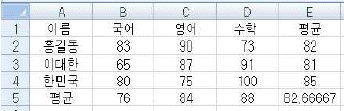
- =SUM(COUNTA(B2:D4), MAXA(B2:D4)) -> 102
- =AVERAGE(SMALL(C2:C4, 2), LARGE(C2:C4, 2)) -> 75
- =SUM(LARGE(B3:D3, 2), SMALL(B3:D3, 2)) -> 174
- =SUM(COUNTA(B2,D4), MINA(B2,D4)) -> 109
(정답률: 69%)
24. 다음 중 엑셀의 데이터 입력에 관련된 설명으로 옳지 않은 것은?
- 한 셀에 여러 줄의 데이터를 입력하려면 <Alt> + <Enter>키를 사용한다.
- 워크시트에서 <Tab>키를 누르면 오른쪽으로 한 셀씩 이동한다.
- 같은 데이터를 여러 셀에 한 번에 입력하려면 <Ctrl> + < Enter>키를 사용한다.
- 숫자나 날짜 데이터의 경우 입력 시 앞의 몇 글자가 해당 열의 기존 내용과 일치하면 자동으로 입력된다.
(정답률: 50%)
25. 다음 중 작성된 매크로를 엑셀이 실행될 때마다 모든 통합문서에서 실행할 수 있도록 하는 방법으로 옳은 것은?
- 작성된 매크로를 XLSTART 폴더에 AUTO.XLSB로 저장 한다.
- 작성된 매크로를 임의의 폴더에 PERSONAL.XLSB로 저장한다.
- 작성된 매크로를 XLSTART 폴더에 PERSONAL.XLSB로 저장한다.
- 작성된 매크로를 임의의 폴더에 AUTO.XLSB로 저장한다.
(정답률: 67%)
26. 다음 그림은 'Macro1' 매크로의 실행 결과와 VBA 코드이다. 다음 중 VBA 코드의 ⓐ, ⓑ, ⓒ 에 들어갈 내용이 순서대로 나열된 것은?
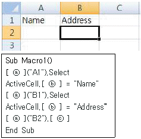
- Range - R1C1 - FormulaR1C1
- Range - FormulaR1C1 - Select
- Cells - R1C1 - FormulaR1C1
- Cells - FormulaR1C1 - Select
(정답률: 57%)
27. 다음 중 피벗 차트 보고서에 대한 설명으로 옳지 않은 것은?
- 피벗 차트 보고서에 필터를 적용하면 피벗 테이블 보고서에 자동 적용된다.
- 피벗 차트 보고서 생성시 자동으로 차트 제목, 항목, 범례 등이 삽입되어 표시된다.
- 표준 차트는 기본적으로 워크시트에 포함된 차트로 만들어지고, 피벗 차트 보고서는 기본적으로 차트 시트에 만들어진다.
- 피벗 차트 보고서를 삭제해도 관련된 피벗 테이블 보고서는 삭제되지 않는다.
(정답률: 32%)
28. 아래 시트에서 [표1]의 할인율[B3]을 적용한 할인가 [B4]를 이용하여 [표2]의 각 정가에 해당하는 할인가 [E3:E6]를 계산하고자 한다. 다음 중 가장 적합한 데이터 도구는?
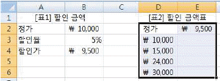
- 통합
- 데이터 표
- 부분합
- 시나리오 관리자
(정답률: 67%)
29. 다음 중 엑셀의 오차 막대에 대한 설명으로 옳지 않은 것은?
- 3차원 차트는 오차 막대를 표시할 수 없다.
- 차트에 고정값, 백분율, 표준 편차, 표준 오차, 사용자 지정 중 선택하여 오차량을 표시할 수 있다.
- 오차 막대를 화면에 표시하는 방법에는 2가지로 양의 값, 음의 값이 있다.
- 차트에 오차 막대를 추가하려면 데이터 계열을 선택한 후 [차트 도구]-[레이아웃]-[분석]-오차 막대를 클릭한다.
(정답률: 64%)
30. [데이터]-[외부 데이터 가져오기]-[텍스트]를 실행하여 텍스트 파일을 불러오고자 한다. 다음 중 이에 대한 설명으로 옳은 것은?
- 가져온 데이터는 원본 텍스트 파일이 수정되면 즉시 수정된 내용이 자동으로 반영된다.
- 데이터의 구분 기호로 탭, 세미콜론, 쉼표, 공백 등이 기본으로 제공되며, 사용자가 원하는 구분 기호를 설정할 수도 있다.
- 텍스트 파일에서 특정 열(column)만 선택하여 가져올 수는 없다.
- 기본적으로 사용되는 텍스트 파일의 형식은 *.txt, *.prn, *.hwp이다.
(정답률: 51%)
31. 다음 중 아래 워크시트에서 총점[B2:B5]을 원래의 값에 기본점수[E2]를 더한 값으로 변경하려고 할 때 실행 해야할 작업의 순서로 옳은 것은?
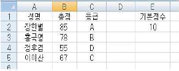
- [E2]선택-[복사]-[B2:B5]선택-[홈]-[클립보드]-[선택하여 붙여넣기]-더하기-확인
- [E2]선택-[복사]-[B2:B5]선택-[홈]-[클립보드]-[연결하여 붙여넣기]
- [E2]선택-[복사]-[B2:B5]선택-[홈]-[클립보드]-[값붙여넣기]
- [E2]선택-[복사]-[B2:B5]선택-[홈]-[클립보드]-[하이퍼링크로 붙여넣기]
(정답률: 57%)
32. 다음 중 아래 시트에서 주어진 표와 표의 데이터를 이용한 차트의 설명으로 옳지 않은 것은?
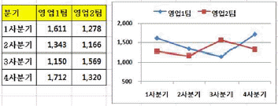
- 표 전체를 원본 데이터로 사용하고 있다.
- 분기가 데이터 계열로 사용되고 있다.
- 세로 (값) 축의 축 서식에서 최소값을 500으로 설정하였다.
- 차트의 종류는 표식이 있는 꺾은선형이다.
(정답률: 72%)
33. 다음 중 배열 수식과 배열 상수에 대한 설명으로 옳지 않은 것은?
- 배열 수식에서 잘못된 인수나 피연산자를 사용할 경우 ‘#VALUE!’의 오류값이 발생한다.
- 배열 상수는 숫자, 논리값, 텍스트, 오류값 외에 수식도 사용할 수 있다.
- 배열 상수에서 다른 행의 값은 세미콜론(;), 다른 열의 값은 쉼표(,)로 구분한다.
- <Ctrl> + <Shift>+ <Enter>키를 누르면 중괄호({ })안에 배열 수식이 표시된다.
(정답률: 50%)
34. 다음 중 엑셀의 바로 가기 키 및 기능 키에 대한 설명 으로 옳지 않은 것은?
- <Ctrl> +<Shift>+<U> : 수식 입력줄이 확장되거나 축소된다.
- <Ctrl> + <1> : 셀 서식 대화 상자를 표시한다.
- <Ctrl> + < F1> : 리본 메뉴가 표시되거나 숨겨진다.
- <F12> : 새 워크시트가 삽입된다.
(정답률: 50%)
35. 다음 중 통합 문서 저장 시 사용하는 [일반 옵션]에 관한 설명으로 옳지 않은 것은?
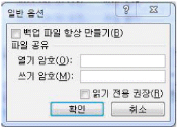
- [백업 파일 항상 만들기]는 통합 문서를 저장할 때마다 백업 복사본을 저장하는 기능이다.
- [열기 암호]는 암호를 모르면 통합 문서를 열어 사용할 수 없도록 암호를 지정하는 기능이다.
- [쓰기 암호]는 암호를 모르더라도 읽기 전용으로 열어 열람이 가능하나 원래 문서 및 복사본으로 통합 문서를 저장할 수 없도록 암호를 지정하는 기능이다.
- [읽기 전용 권장]은 문서를 열 때마다 통합 문서를 읽기 전용으로 열도록 대화상자를 나타내는 기능이다.
(정답률: 73%)
36. 다음 중 [페이지 설정] 대화상자의 [시트] 탭에서 설정할 수 없는 것은?
- 워크시트의 셀 구분선이 인쇄되도록 설정할 수 있다.
- 컬러로 설정된 셀 채우기 색상이나 무늬를 무시하고, 흑백으로 인쇄되도록 설정할 수 있다.
- 워크시트에 삽입되어 있는 차트, 도형, 그림 등의 모든 그래픽 요소를 제외하고 텍스트만 빠르게 인쇄 되도록 설정할 수 있다.
- 인쇄할 페이지의 상단이나 하단에 동일한 내용을 인쇄하기 위한 머리글/바닥글을 설정할 수 있다.
(정답률: 48%)
37. 다음 그림과 같이 ‘통합 문서 보호’ 기능이 설정되었을 때의 상황을 설명한 것으로 옳지 않은 것은
- 워크시트를 이동하거나 삭제할 수 없다.
- 새 워크시트 또는 차트 시트를 삽입할 수 없다.
- 통합 문서가 열릴 때마다 통합 문서 창을 같은 크기와 위치에 유지할 수 있다.
- 워크시트의 이름을 변경할 수 있다.
(정답률: 54%)
38. 다음 중 아래 그림에 대한 설명으로 옳지 않은 것은
- 설정된 확대/축소 비율은 지정한 시트에만 적용된다.
- 특정 영역만 확대해서 보려면 해당 영역을 선택하고 [선택 영역 확대/축소]를 실행한다. 단, 확대된 크기는 원래 크기의 400%를 넘지 못한다.
- 최소 축소 비율은 원래 크기의 10%이다.
- [확대/축소]를 클릭하여 설정한 확대 비율은 인쇄시 확대/축소 비율에 반영된다.
(정답률: 75%)
39. 다음 중 아래 시트에서 부서별 인원수[H3:H6]를 구하기 위하여 [H3]셀에 입력되는 배열 수식으로 옳지 않은 것은?
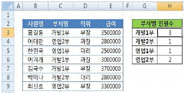
- {=SUM(($C$3:$C$9=G3) * 1)}
- {=DSUM(($C$3:$C$9=G3) * 1)}
- {=SUM(IF($C$3:$C$9=G3, 1))}
- {=COUNT(IF($C$3:$C$9=G3, 1))}
(정답률: 52%)
40. 다음 중 아래 [보기]와 같은 시트에서 수식의 결과 값이 셋과 다른 것은?
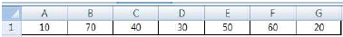
- =SMALL(A1:G1,{3})
- =AVERAGE(SMALL(A1:G1,{1;2;3;4;5}))
- =LARGE(A1:G1,{5})
- =SMALL(A1:G1,COLUMN(D1))
(정답률: 63%)
3과목: 데이터베이스 일반
41. 다음 중 입력 마스크에서 사용되는 기호문자와 의미가 옳게 연결된 것은?
- 0 : 선택 요소로서 숫자나 공백을 입력
- 9 : 필수 요소로서 0~9까지의 숫자를 입력
- # : 선택 요소로서 A~Z까지의 영문자를 입력
- & : 필수 요소로서 모든 문자나 공백을 입력
(정답률: 57%)
42. 다음 중 데이터 이벤트 속성에 해당하지 않는 것은?
- After Update
- On Change
- Before Update
- On Dbl Click
(정답률: 55%)
43. 다음 중 데이터베이스 관리 시스템(D B MS)에 대한 설명으로 옳지 않은 것은?
- 응용 프로그램과 데이터베이스 사이에 위치하여 데이터베이스를 관리한다.
- 파일 시스템의 단점인 데이터의 중복성과 종속성의 문제를 해결하기 위해 제안된 시스템이다.
- DBMS의 기능은 정의 기능, 조작 기능 및 제어 기능으로 나뉜다.
- 순차적인 접근을 지원하여 백업과 회복의 절차가 간단하다.
(정답률: 66%)
44. 다음 중 데이터베이스에 저장되어 있는 모든 데이터 개체 들에 대한 정보를 유지, 관리하는 시스템으로 ‘시스템 카탈로그’라고도 불리는 것은?
- 데이터 사전(Data Dictionary)
- 스키마(Schema)
- SQL
- 관계 대수(Relational Algebra)
(정답률: 46%)
45. 다음 중 아래와 같은 이벤트 프로시저를 실행하는 Command1 단추를 클릭했을 때 실행 결과로 옳은 것은?
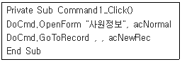
- 사원정보 테이블이 열리고 새 레코드를 입력 할 수 있도록 비워진 테이블이 열린다.
- 사원정보 폼이 열리고 첫번째 레코드의 가장 왼쪽 컨트롤에 포커스가 표시된다.
- 사원정보 폼이 열리고 마지막 레코드의 가장 왼쪽 컨트롤에 포커스가 표시된다.
- 사원정보 폼이 열리고 새 레코드를 입력할 수 있도록 비워진 폼이 표시된다.
(정답률: 72%)
46. 다음 중 전체 페이지는 100이고 현재 페이지는 10일 때 페이지 정보를 표현하는 식과 결과가 옳지 않은 것은?
- 식: =[Page], 결과: 10
- 식: =[Page] & "Page", 결과: 10Page
- 식: =Format([Page],"000"), 결과: 10
- 식: =[Page] & "/" & [Pages], 결과: 10/100
(정답률: 71%)
47. 아래와 같이 보고서 머리글의 텍스트 박스 컨트롤에 컨트롤 원본을 지정하였다. 다음 중 보고서 미리보기를 실행하였을 때 표시되는 결과로 옳은 것은? (단, 오늘 날짜가 2013년 10월 4일 금요일 이라고 가정한다.)
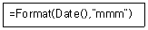
- Oct
- 10월
- 10
- Fri
(정답률: 67%)
48. 다음 중 아래 그림과 같이 그룹화 되어 있는 보고서에 대한 설명으로 옳지 않은 것은?
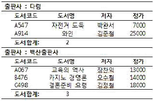
- 출판사별로 그룹화되어 있다.
- 그룹 바닥글 영역이 설정되어 있다.
- 그룹 머리글에 출판사별 도서수가 표시되어 있다.
- 그룹내 도서코드는 오름차순으로 정렬되어 있다.
(정답률: 71%)
49. 다음 중 실행 쿼리에 해당하지 않는 것은
- 테이블 만들기 쿼리
- 추가 쿼리
- 업데이트 쿼리
- 선택 쿼리
(정답률: 54%)
50. 다음 중 아래의 <급여> 테이블에 대한 SQL 명령과 실행 결과로 옳지 않은 것은? (단, 빈 칸은 Null 임)
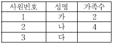
- SELECT COUNT(성명) FROM 급여; 를 실행한 결과는 3이다.
- SELECT COUNT(가족수) FROM 급여; 를 실행한 결과는 3이다.
- SELECT COUNT(*) FROM 급여; 를 실행한 결과는 3이다.
- SELECT COUNT(*) FROM 급여 WHERE 가족수 Is Null;을 실행한 결과는 1이다.
(정답률: 65%)
51. 다음 쿼리에 설정된 조건에 대한 설명으로 옳은 것은?
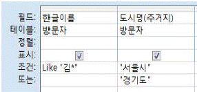
- 한글이름이 '김'으로 시작하는 레코드 중 도시명(주거지)가 '서울시' 또는 '경기도'인 레코드 검색
- 한글이름이 '김'으로 시작하거나 도시명(주거지)가 '서울시' 이거나 '경기도'인 레코드 검색
- 한글이름이 '김'으로 시작하는 레코드 중 도시명(주거지)가 '서울시' 이거나, 도시명(주거지)가 '경기도'인 레코드 검색
- 한글이름이 '김'으로 시작하는 레코드 중 도시명(주거지)가 '경기도'는 제외하고 '서울시'인 레코드 검색
(정답률: 55%)
52. 다음 중 쿼리 검색 조건의 연산자와 함수 사용에 대한 설명이 옳지 않은 것은?
- YEAR(DATE())는 시스템의 현재 날짜 정보에서 연도값만을 반환한다.
- INSTR(“KOREA”,“R”)는 “KOREA”라는 문자열에서 “R”의 위치 3을 반환한다.
- RIGHT([주민번호],2)=“01” 은 [주민번호] 필드에서 맨 앞의 두 자리가 ‘01’인 레코드를 추출한다.
- LIKE “[ㄱ-ㄷ]*” 은 ‘ㄱ’에서 ‘ㄷ’ 사이에 있는 문자로 시작하는 필드 값을 검색한다.
(정답률: 67%)
53. 다음 중 데이터시트에 요약 정보를 표시하는 ‘Σ 요약’ 기능에 관한 설명으로 옳지 않은 것은?
- ‘Σ 요약’ 기능을 실행했을 때 생기는 요약 행을 통해 집계 함수를 좀 더 쉽고 빠르게 사용할 수 있다.
- ‘Σ 요약’ 기능은 데이터시트 형식으로 표시되는 테이블, 폼, 쿼리, 보고서 등에서 사용할 수 있다.
- ‘Σ 요약’ 기능이 설정된 상태에서 ‘텍스트’ 데이터 형식의 필드에는 ‘개수’ 집계 함수만 지정 할 수 있다.
- ‘Σ 요약’ 기능이 설정된 상태에서 '예/아니오' 데이터 형식의 필드에 ‘개수’ 집계 함수를 지정하면 체크된 레코드의 총 개수가 표시된다.
(정답률: 45%)
54. 아래 보기에서 개체별로 내보내기 할 수 있는 형식의 연결이 옳은 것만 나열한 것은?
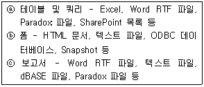
- ⓐ,ⓑ,ⓒ
- ⓐ,ⓒ
- ⓑ,ⓒ
- ⓐ
(정답률: 33%)
55. 다음 중 보고서의 페이지 설정 창에서 '데이터만 인쇄' 옵션을 선택했을 때 인쇄되는 것으로 옳은 것은?
- 콤보상자의 모양
- 선이나 사각형으로 작성한 모양
- 레이블로 작성한 보고서의 제목
- 텍스트 상자에서 표시하는 값
(정답률: 68%)
56. 다음 중 하나의 필드에 할당되는 크기(바이트 수 기준)가 가장 작은 데이터 형식은 무엇인가?
- 정수(Long)
- 날짜/시간
- 통화
- 복제 ID
(정답률: 59%)
57. 다음 중 폼이나 보고서에서 조건에 맞는 특정 컨트롤에만 서식을 적용하는 조건부 서식에 대한 설명으로 옳은 것을 모두 고르면?
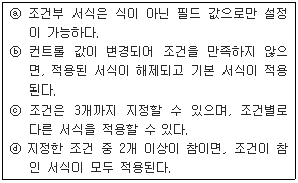
- ⓐ, ⓑ
- ⓑ, ⓒ
- ⓒ,ⓓ
- ⓐ,ⓓ
(정답률: 58%)
58. 다음 중 폼의 데이터 속성에서 설정할 수 없는 것은?
- 데이터 원본
- 레코드 잠금
- 데이터 입력
- 로드할 때 필터링
(정답률: 35%)
59. 다음 중 기본 폼과 하위 폼에 대한 설명으로 옳지 않은 것은?
- ‘일 대 다’ 관계에서 하위 폼에는 ‘일’에 해당하는 데이터가 표시되며, 기본 폼에는 ‘다’에 해당하는 데이터가 표시된다.
- 하위 폼은 연속 폼의 형태로 표시할 수 있지만 기본폼은 연속 폼의 형태로 표시할 수 없다.
- 기본 폼 내에 포함시킬 수 있는 하위 폼의 개수는 제한이 없으며, 최대 7수준까지 하위폼을 중첩 시킬 수 있다.
- 테이블, 쿼리나 다른 폼을 이용하여 하위 폼을 작성할 수 있다.
(정답률: 60%)
60. [테이블 도구]-[만들기]-[폼] 그룹의 명령을 이용하여 위쪽 구역에는 데이터시트를 표시하는 폼을 만들고, 아래쪽 구역에는 데이터시트에서 선택한 레코드에 대한 정보를 입력할 수 있는 폼을 만들고자 한다. 다음 중 가장 적절한 폼 만들기 명령은?
- 여러 항목
- 폼 분할
- 폼 마법사
- 모달 대화상자
(정답률: 72%)
[휴지통]의 용량을 초과하여 사용하면 [휴지통]의 모든 내용은 삭제된다는 이유는 [휴지통]은 용량을 초과하면 가장 오래된 파일부터 자동으로 삭제되기 때문입니다. 따라서 [휴지통]의 용량을 초과하면 [휴지통]의 모든 내용이 삭제됩니다.